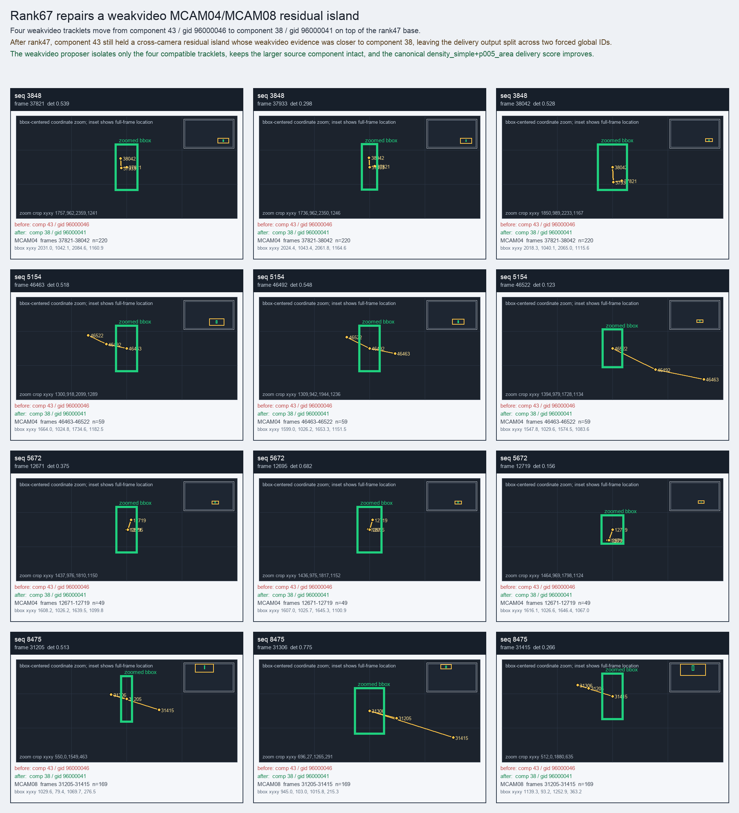

Rank67 repairs a weakvideo MCAM04/MCAM08 residual island
Four weakvideo tracklets move from component 43 / gid 96000046 to component 38 / gid 96000041 on top of the rank47 base.
Before
component 43, gid 96000046, component_size 100
component 43, gid 96000046, component_size 100
After
component 38, gid 96000041, component_size 47, decision_status subpart_reassign
component 38, gid 96000041, component_size 47, decision_status subpart_reassign
Evidence
target_sim=0.7276, target_margin=-0.1147, source_rest_margin=0.1302
target_sim=0.7276, target_margin=-0.1147, source_rest_margin=0.1302
Failure and fix
Old failure: After rank47, component 43 still held a cross-camera residual island whose weakvideo evidence was closer to component 38, leaving the delivery output split across two forced global IDs.
New implementation: The weakvideo proposer isolates only the four compatible tracklets, keeps the larger source component intact, and the canonical density_simple+p005_area delivery score improves.
BBox evidence

Moved tracklets
| seq | video | gid | component | frames | dets |
|---|---|---|---|---|---|
| 3848 | vlincs_MS01_MC0001_MCAM04_2024-03-Tc6 | 96000046 -> 96000041 | 43 -> 38 | 37821-38042 | 220 |
| 5154 | vlincs_MS01_MC0001_MCAM04_2024-03-Tc6 | 96000046 -> 96000041 | 43 -> 38 | 46463-46522 | 59 |
| 5672 | vlincs_MS01_MC0001_MCAM04_2024-03-Tc6 | 96000046 -> 96000041 | 43 -> 38 | 12671-12719 | 49 |
| 8475 | vlincs_MS01_MC0001_MCAM08_2024-03-Tc6 | 96000046 -> 96000041 | 43 -> 38 | 31205-31415 | 169 |